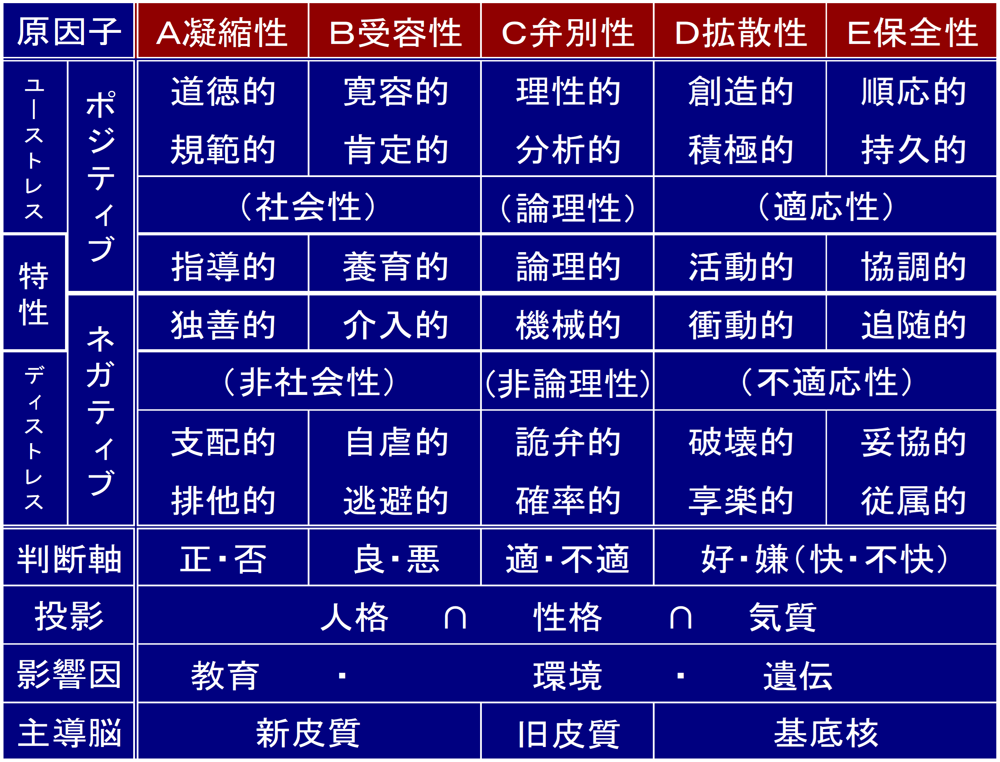

Five Factors & Stress（FFS）理論は、人間の思考・行動パターンを
5つの因子とストレス値で科学的に分析する、組織・人材開発のための理論です。
自己理解を深め、チームワークや人間関係の改善に広く活用されています。

※ タップで拡大
FFS理論は、小林恵智博士（同研究所代表）により提唱されました。
人間の本質的な違いを因子として可視化し、個人・組織の可能性を
最大化することを目的としています。
本サイトは同研究所の使用許諾のもとで運営されています。
ETHOS Neo システムを使うには
ETHOS Neo システムを利用する